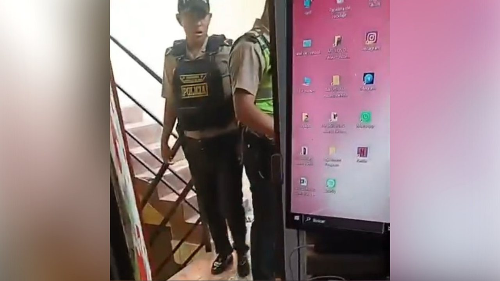
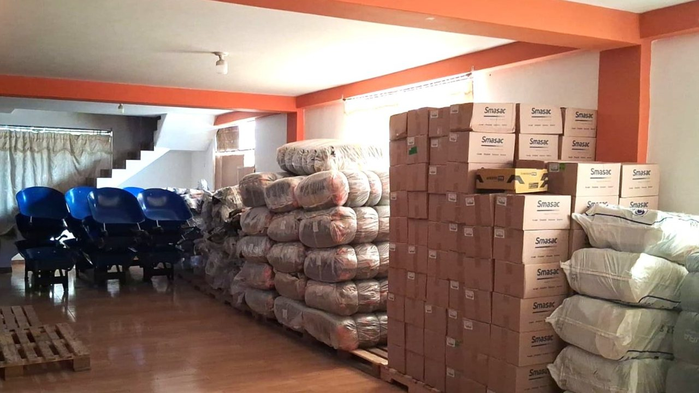
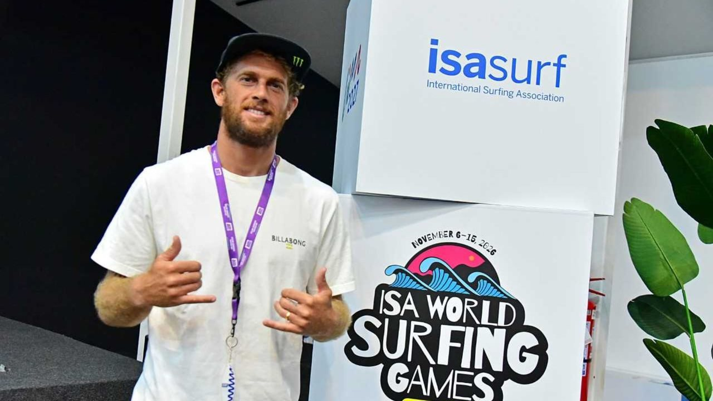
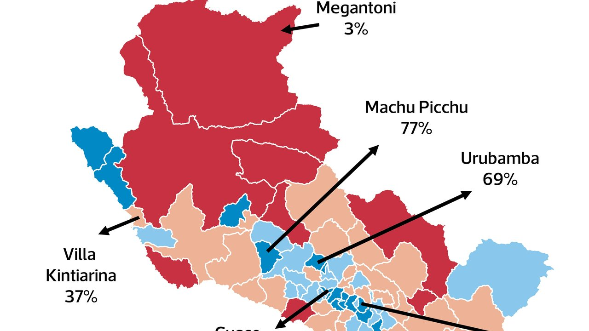
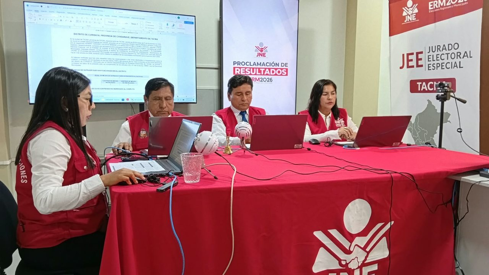

Caso Liceo Naval: archivo contra cuatro adolescentes no es definitivo y puede ser apelado Caso Liceo Naval: Fiscalía de Familia archiva investigación contra cuatro adolescentes investigados Seguir en Guardar Lima, Perú.





Caso Liceo Naval: archivo contra cuatro adolescentes no es definitivo y puede ser apelado Caso Liceo Naval: Fiscalía de Familia archiva investigación contra cuatro adolescentes investigados Seguir en Guardar Lima, Perú.
Trabajadores del Poder Judicial de la Federación (PJF) iniciaron este viernes un paro de labores contra la evaluación del desempeño que se aplicará en diciembre, pues consideran que amenaza sus empleos.
El Jurado Nacional de Elecciones (JNE) determinó que los alcaldes en funciones que postularon como primeros regidores en las Elecciones Regionales y Municipales 2026 no recibirán la credencial de alcalde para el periodo 2027 a 2030.
Ya sea Premium, Regular o Diésel, aquí están los precios más altos y más bajos de la gasolina. El precio de la gasolina en Lima cambia todos los días.
• Loto Plus: controlar resultados del miércoles 28 de octubre. Todos los sorteos de Loto Plus se transmiten por nuestro canal de You Tube.
El Serfor recuerda que la posesión de fauna silvestre de procedencia ilegal es una infracción administrativa muy grave.
El director de un centro aeróbicos en Ventanilla fue detenido este viernes por la Policía Nacional luego de ser denunciado por seis de sus trabajadoras tras presuntamente haber colocado tres cámaras espías en el baño de su establecimiento. El detenido es investigado por los presuntos delitos de violación contra la intimidad.
Este viernes, el squashista nacional Diego Elías ratificó su buen momento al derrotar al egipcio Mostafa Asal, así clasificó a la final del US Open Squash Championships 2026. Diego Elías vs Mostafa Asal: se enfrentan este viernes 6 de noviembre por la semifinal del US Open Squash Championships 2026.
El viernes 6 de noviembre se conoció el fallo de la Federación Peruana de Vóley (FPV) sobre la polémica por la presencia simultánea de cuatro extranjeras en cancha durante el partido entre Alianza Lima y Regatas Lima, por parte del equipo chorrillano.
Cada edición dura menos de dos minutos. En la web tienes el resumen de cada historia y el enlace directo al medio original para leerla completa.
Conoce Olfatecho →